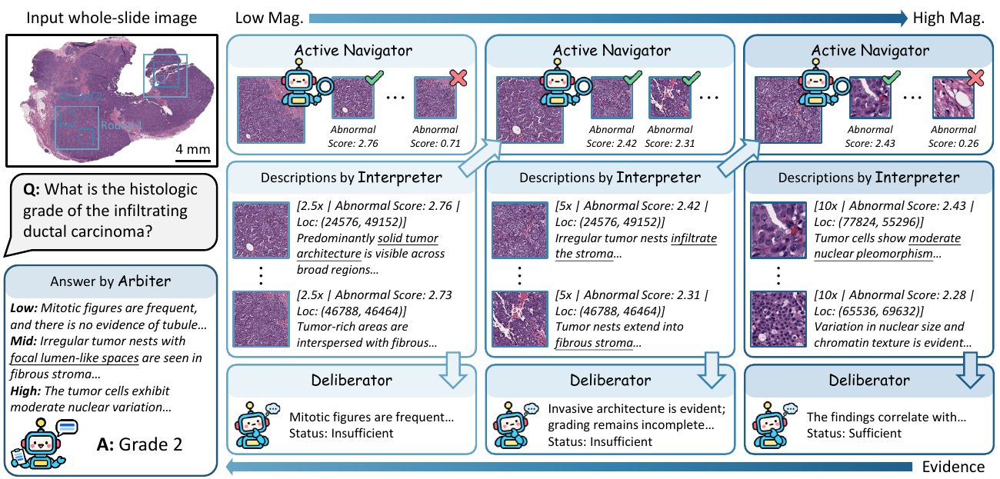

IEEE Transactions on Multimedia · Under review
Agentic Visual Reasoning in Whole-Slide Pathology Images via Active Perception
AdaptivePath learns to select regions and magnification across a whole slide, then evaluates morphological evidence to refine its answer. The resulting observation path makes visual reasoning traceable.